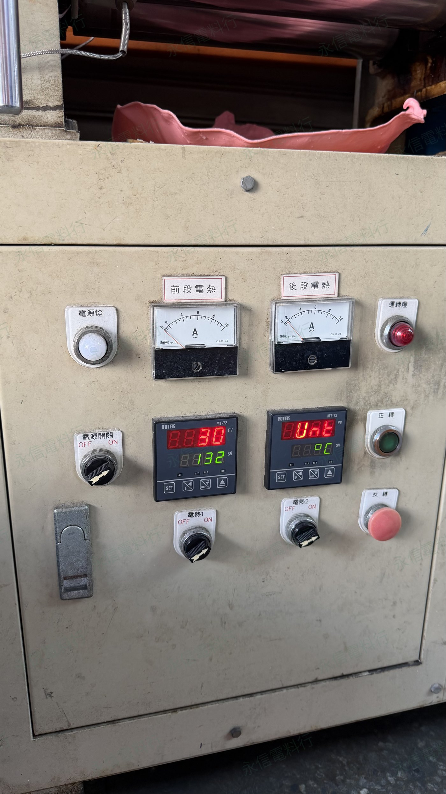

控制盤故障排查
檢查接觸器、繼電器、斷路器、控制電源與配線狀況。
等待實績照片SERVICE CASES
記錄控制盤、溫控器與工業控制元件的實際現場作業；案例僅呈現已確認內容，不揭露客戶名稱、廠區位置或設備機密。
不揭露未經同意的客戶名稱、廠區位置、設備機密或可辨識生產資訊。公開照片會套用永信電料行浮水印，案例內容只記錄已確認的實際作業。
FIELD SERVICE RECORD
以實際照片記錄作業內容，方便了解永信電料行的現場維修與元件更換流程。

現場進行溫控器更換作業，照片記錄控制面板、溫控器背面端子、箱內配線與通電顯示狀態；客戶名稱與廠區資訊不公開。
查看完整作業紀錄 →檢查接觸器、繼電器、斷路器、控制電源與配線狀況。
等待實績照片依舊品銘牌、電壓、接點與安裝尺寸核對替換材料。
已有實績案例協助型號核對、周邊配線檢查及替換前的規格確認。
等待實績照片近接、光電、限動開關、按鈕與指示元件的更換支援。
等待實績照片NEXT STEP
服務實績會依日期與工作類型整理；上架前先檢查客戶識別資訊，未確認的故障原因、設備規格或維修成果不自行推測。